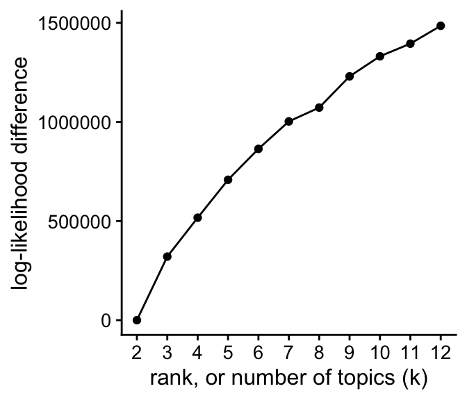
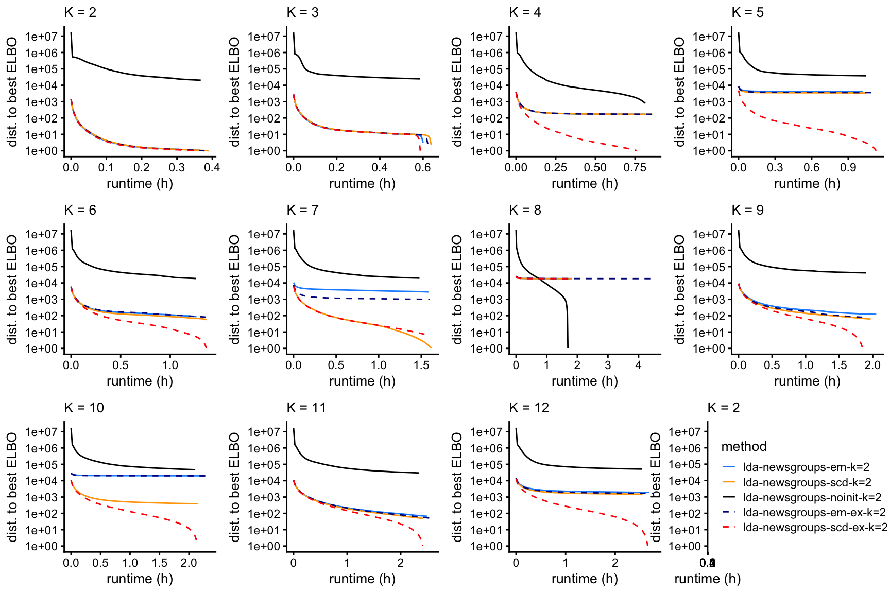

Last updated: 2024-07-28
Checks: 7 0
Knit directory:
fastTopics-experiments/analysis/
This reproducible R Markdown analysis was created with workflowr (version 1.7.1). The Checks tab describes the reproducibility checks that were applied when the results were created. The Past versions tab lists the development history.
Great! Since the R Markdown file has been committed to the Git repository, you know the exact version of the code that produced these results.
Great job! The global environment was empty. Objects defined in the global environment can affect the analysis in your R Markdown file in unknown ways. For reproduciblity it’s best to always run the code in an empty environment.
The command set.seed(1) was run prior to running the
code in the R Markdown file. Setting a seed ensures that any results
that rely on randomness, e.g. subsampling or permutations, are
reproducible.
Great job! Recording the operating system, R version, and package versions is critical for reproducibility.
Nice! There were no cached chunks for this analysis, so you can be confident that you successfully produced the results during this run.
Great job! Using relative paths to the files within your workflowr project makes it easier to run your code on other machines.
Great! You are using Git for version control. Tracking code development and connecting the code version to the results is critical for reproducibility.
The results in this page were generated with repository version 3a0d053. See the Past versions tab to see a history of the changes made to the R Markdown and HTML files.
Note that you need to be careful to ensure that all relevant files for
the analysis have been committed to Git prior to generating the results
(you can use wflow_publish or
wflow_git_commit). workflowr only checks the R Markdown
file, but you know if there are other scripts or data files that it
depends on. Below is the status of the Git repository when the results
were generated:
Ignored files:
Ignored: analysis/.sos/
Ignored: data/20news-bydate/
Ignored: data/droplet.RData
Ignored: data/nips_1-17.mat
Ignored: data/pbmc_68k.RData
Ignored: output/droplet/fits-droplet.RData
Ignored: output/newsgroups/de-newsgroups.RData
Ignored: output/newsgroups/fits-newsgroups.RData
Ignored: output/newsgroups/lda-newsgroups.RData
Ignored: output/nips/fits-nips.RData
Ignored: output/nips/lda-nips.RData
Ignored: output/pbmc68k/fits-pbmc68k.RData
Untracked files:
Untracked: analysis/lda-eb-newsgroups-em-k=10.rds
Untracked: analysis/lda-eb-newsgroups-scd-ex-k=10.rds
Untracked: analysis/lda-newsgroups-em-k=10.rds
Untracked: analysis/lda-newsgroups-scd-ex-k=10.rds
Untracked: analysis/maptpx-newsgroups-em-k=10.rds
Untracked: analysis/maptpx-newsgroups-scd-ex-k=10.rds
Untracked: analysis/smallsim_elbo.pdf
Untracked: analysis/smallsim_lda_structure_plots.pdf
Untracked: analysis/smallsim_progress.pdf
Untracked: analysis/smallsim_structure_plots.pdf
Untracked: plots/
Note that any generated files, e.g. HTML, png, CSS, etc., are not included in this status report because it is ok for generated content to have uncommitted changes.
These are the previous versions of the repository in which changes were
made to the R Markdown
(analysis/assess_fits_newsgroups.Rmd) and HTML
(docs/assess_fits_newsgroups.html) files. If you’ve
configured a remote Git repository (see ?wflow_git_remote),
click on the hyperlinks in the table below to view the files as they
were in that past version.
| File | Version | Author | Date | Message |
|---|---|---|---|---|
| Rmd | 1271d9a | Peter Carbonetto | 2024-07-28 | Switched x axis iteration number to runtime in LDA plots in assess_fits_newsgroups analysis. |
| Rmd | a546328 | Peter Carbonetto | 2024-07-27 | Added LDA plots to assess_fits_newsgroups analysis. |
| html | aab1483 | Peter Carbonetto | 2021-04-20 | Created .eps output of word scatterplot in assess_fits_68k_pbmc |
| Rmd | f72eadf | Peter Carbonetto | 2021-04-20 | workflowr::wflow_publish("assess_fits_newsgroups.Rmd") |
| Rmd | 270f18c | Peter Carbonetto | 2021-04-15 | Removed temp2.R. |
| html | ffd34b6 | Peter Carbonetto | 2021-04-14 | Adjusted words scatterplot in assess_fits_newsgroups analysis. |
| Rmd | 622e798 | Peter Carbonetto | 2021-04-14 | workflowr::wflow_publish("assess_fits_newsgroups.Rmd") |
| html | 213c4f6 | Peter Carbonetto | 2021-04-14 | Added word frequency scatterplot to assess_fits_newsgroups analysis. |
| Rmd | 8c72b19 | Peter Carbonetto | 2021-04-14 | workflowr::wflow_publish("assess_fits_newsgroups.Rmd") |
| Rmd | ed52e14 | Peter Carbonetto | 2021-04-11 | Working on structure plot for 68k pbmc data. |
| html | 5589c8d | Peter Carbonetto | 2021-04-11 | Added structure plot to assess_fits_newsgroups analysis. |
| Rmd | a656801 | Peter Carbonetto | 2021-04-11 | workflowr::wflow_publish("assess_fits_newsgroups.Rmd") |
| html | ce00ac5 | Peter Carbonetto | 2021-04-10 | Added structure plot to assess_fits_newsgroups analysis. |
| Rmd | bf5c562 | Peter Carbonetto | 2021-04-10 | Removed temp.R. |
| html | bf5c562 | Peter Carbonetto | 2021-04-10 | Removed temp.R. |
| html | b6c0c71 | Peter Carbonetto | 2021-04-09 | Another small adjustment the assess_fits_newsgroups scatterplots. |
| Rmd | 0ab6c04 | Peter Carbonetto | 2021-04-09 | workflowr::wflow_publish("assess_fits_newsgroups.Rmd") |
| html | 42cb17e | Peter Carbonetto | 2021-04-09 | Adjusted scatterplots in assess_fits_newsgroups analysis. |
| Rmd | 8f157b4 | Peter Carbonetto | 2021-04-09 | workflowr::wflow_publish("assess_fits_newsgroups.Rmd") |
| html | d1dadf8 | Peter Carbonetto | 2021-04-09 | Added loadings scatterplots to aassess_fits_newsgroups analysis. |
| Rmd | b37146b | Peter Carbonetto | 2021-04-09 | workflowr::wflow_publish("assess_fits_newsgroups.Rmd") |
| html | c679bdc | Peter Carbonetto | 2021-04-07 | Small fix to assess_fits_newsgroups output. |
| Rmd | db4870b | Peter Carbonetto | 2021-04-07 | workflowr::wflow_publish("assess_fits_newsgroups.Rmd") |
| html | ca4f229 | Peter Carbonetto | 2021-04-07 | Added max KKT residual progress plots to assess_fits_newsgroups |
| Rmd | b916251 | Peter Carbonetto | 2021-04-07 | workflowr::wflow_publish("assess_fits_newsgroups.Rmd") |
| Rmd | 7827775 | Peter Carbonetto | 2021-04-06 | Added plots-for-paper-1 code chunk to assess_fits_newsgroups.Rmd. |
| Rmd | 0f88216 | Peter Carbonetto | 2021-04-06 | A couple of small changes. |
| html | cb0de01 | Peter Carbonetto | 2021-04-06 | Added loglik progress plots to assess_fits_newsgroups analysis. |
| Rmd | 720e225 | Peter Carbonetto | 2021-04-06 | workflowr::wflow_publish("assess_fits_newsgroups.Rmd") |
| html | 51a6dd3 | Peter Carbonetto | 2021-04-06 | First build of the assess_fits_newsgroups analysis. |
| Rmd | b57553c | Peter Carbonetto | 2021-04-06 | workflowr::wflow_publish("assess_fits_newsgroups.Rmd") |
Here we compare the quality of the fits obtained from the different updates (EM and SCD, with and without extrapolation), and with different numbers of topics, \(K\).
Load the packages used in the analysis below, as well as some additional functions for creating the plots.
library(Matrix)
library(fastTopics)
library(ggplot2)
library(cowplot)
library(ggrepel)
set.seed(1)
source("../code/plot_functions.R")Load the newsgroups data, and the results of running
fit_poisson_nmf on the “20 newsgroups” data, with different
algorithms, and for various settings of \(K\). Also load the results of running LDA
with different initializations.
load("../data/newsgroups.RData")
load("../output/newsgroups/fits-newsgroups.RData")
fits <- lapply(fits,poisson2multinom)This plot shows the improvement in the log-likelihood as the rank, \(K\), is increased. The log-likelihoods are shown relative to the log-likelihood at \(K = 2\).
plot_loglik_vs_rank(fits) +
theme_cowplot(font_size = 12)
The next set of plots shows the improvement in the fit over time, for \(K\) from 2 to 12, using EM or SCD, with and without extrapolation. The quality of the fit is measured by the log-likelihood relative to the best log-likelihood that was identified among all methods compared.
prune_prefit_iters <- function (fit) {
n <- nrow(fit$progress)
fit$progress <- fit$progress[1000:n,]
fit$progress <- transform(fit$progress,timing = timing/60^2)
return(fit)
}
create_progress_plot <- function (fits, k, y = "loglik")
plot_progress(fits,y = y,add.point.every = 100,shapes = 21,
colors = c("dodgerblue","red","dodgerblue","red"),
fills = c("dodgerblue","red","white","white")) +
scale_y_continuous(trans = "log10",breaks = 10^seq(-8,8)) +
guides(color = "none",fill = "none",size = "none",
shape = "none",linetype = "none") +
labs(x = "runtime (h)",title = paste("K =",k)) +
theme_cowplot(font_size = 10) +
theme(plot.title = element_text(size = 10,face = "plain"))
fits <- lapply(fits,prune_prefit_iters)
p <- vector("list",12)
for (i in 2:12)
p[[i]] <- create_progress_plot(fits[dat$k == i],i)
plot_grid(p[[2]],p[[3]],p[[4]],p[[5]],
p[[6]],p[[7]],p[[8]],p[[9]],
p[[10]],p[[11]],p[[12]],
nrow = 3,ncol = 4)
| Version | Author | Date |
|---|---|---|
| cb0de01 | Peter Carbonetto | 2021-04-06 |
These plots shows the evolution of the KKT residuals over time.
for (i in 2:12)
p[[i]] <- create_progress_plot(fits[dat$k == i],i,y = "res")
plot_grid(p[[2]],p[[3]],p[[4]],p[[5]],
p[[6]],p[[7]],p[[8]],p[[9]],
p[[10]],p[[11]],p[[12]],
nrow = 3,ncol = 4)
| Version | Author | Date |
|---|---|---|
| ca4f229 | Peter Carbonetto | 2021-04-07 |
An example in which the EM and (extrapolated) CD estimates largely agree:
topic_colors <- c("#a6cee3","#1f78b4","#b2df8a","#33a02c","#fb9a99",
"#e31a1c","#fdbf6f","#ff7f00","#cab2d6","#6a3d9a")
fit1 <- fits[["fit-newsgroups-em-k=9"]]
fit2 <- fits[["fit-newsgroups-scd-ex-k=9"]]
n <- nrow(fit1$L)
pdat <- data.frame(x = as.vector(fit1$L),
y = as.vector(fit2$L),
k = factor(rep(1:9,each = n)))
pdat <- pdat[sample(9*n),]
p1 <- ggplot(pdat,aes(x = x,y = y,fill = k)) +
geom_point(color = "white",shape = 21,size = 2) +
geom_abline(color = "black",linetype = "dotted") +
scale_fill_manual(values = topic_colors) +
labs(x = "EM estimate",y = "extrapolated CD estimate") +
theme_cowplot(font_size = 12)
print(p1)
An example in which the EM and (extrapolated) CD estimates greatly differ:
fit1 <- fits[["fit-newsgroups-em-k=10"]]
fit2 <- fits[["fit-newsgroups-scd-ex-k=10"]]
n <- nrow(fit1$L)
pdat <- data.frame(x = as.vector(fit1$L),
y = as.vector(fit2$L),
k = factor(rep(1:10,each = n)))
pdat <- pdat[sample(10*n),]
p2 <- ggplot(pdat,aes(x = x,y = y,fill = k)) +
geom_point(color = "white",shape = 21,size = 2) +
geom_abline(color = "black",linetype = "dotted") +
scale_fill_manual(values = topic_colors) +
labs(x = "EM estimate",y = "extrapolated CD estimate") +
theme_cowplot(font_size = 12)
print(p2)
For a closer look at the \(K = 10\) (extrapolated) CD estimates, we create a Structure plot:
set.seed(1)
topics <- factor(topics,
c("sci.med","rec.autos","rec.motorcycles","alt.atheism",
"soc.religion.christian","talk.religion.misc",
"rec.sport.baseball","rec.sport.hockey",
"talk.politics.mideast","talk.politics.guns","sci.crypt",
"talk.politics.misc","sci.space","sci.electronics",
"misc.forsale","comp.sys.ibm.pc.hardware",
"comp.sys.mac.hardware","comp.os.ms-windows.misc",
"comp.graphics","comp.windows.x"))
topic_colors <- c("#a6cee3","#1f78b4","#b2df8a","#33a02c","#fb9a99",
"#e31a1c","#fdbf6f","#ff7f00","#cab2d6","#6a3d9a")
fit <- fits[["fit-newsgroups-scd-ex-k=10"]]
p3 <- structure_plot(fit,grouping = topics,topics = 10:1,
colors = topic_colors[10:1],perplexity = 20,gap = 20,
verbose = FALSE)
print(p3)
Topic 1 appears to be capturing “off-topic” discussion:
pdat <- data.frame(word = colnames(counts),
x = pmax(1e-6,apply(fit$F[,-1],1,max)),
y = pmax(1e-6,fit$F[,1]),
stringsAsFactors = FALSE)
pdat <- transform(pdat,fc = y/x)
pdat[with(pdat,!((fc > 4 & x > 1e-5) | (fc > 2 & x > 0.002))),"word"] <- ""
p4 <- ggplot(pdat,aes(x = x,y = y,label = word)) +
geom_point(color = "white",fill = "royalblue",shape = 21) +
geom_text_repel(color = "darkgray",size = 2.25,segment.color = "darkgray",
segment.size = 0.25,min.segment.length = 0,
max.overlaps = Inf) +
geom_abline(intercept = 0,slope = 1,color = "black",linetype = "dotted") +
scale_x_continuous(trans = "log10",limits=10^c(-6,-1),breaks=10^seq(-6,-1)) +
scale_y_continuous(trans = "log10",limits=10^c(-6,-1),breaks=10^seq(-6,-1)) +
labs(x = "highest frequency in another topic",
y = "frequency in topic 1") +
theme_cowplot(font_size = 10)
print(p4)
Finally, let’s have a look at the results of running LDA with the various initializations:
load("../output/newsgroups/lda-newsgroups.RData")
p <- vector("list",12)
for (i in 2:12) {
runs <- which(dat$k == i)
p[[i]] <- create_elbo_plot(fits[runs],dat[runs,"runtime"],i)
}
plot_grid(p[[2]],p[[3]],p[[4]],p[[5]],
p[[6]],p[[7]],p[[8]],p[[9]],
p[[10]],p[[11]],p[[12]],
nrow = 3,ncol = 4)
sessionInfo()
# R version 4.3.3 (2024-02-29)
# Platform: aarch64-apple-darwin20 (64-bit)
# Running under: macOS Sonoma 14.5
#
# Matrix products: default
# BLAS: /Library/Frameworks/R.framework/Versions/4.3-arm64/Resources/lib/libRblas.0.dylib
# LAPACK: /Library/Frameworks/R.framework/Versions/4.3-arm64/Resources/lib/libRlapack.dylib; LAPACK version 3.11.0
#
# locale:
# [1] en_US.UTF-8/en_US.UTF-8/en_US.UTF-8/C/en_US.UTF-8/en_US.UTF-8
#
# time zone: America/Chicago
# tzcode source: internal
#
# attached base packages:
# [1] stats graphics grDevices utils datasets methods base
#
# other attached packages:
# [1] ggrepel_0.9.5 cowplot_1.1.3 ggplot2_3.5.0 fastTopics_0.6-184
# [5] Matrix_1.6-5
#
# loaded via a namespace (and not attached):
# [1] gtable_0.3.4 xfun_0.42 bslib_0.6.1
# [4] htmlwidgets_1.6.4 lattice_0.22-5 quadprog_1.5-8
# [7] vctrs_0.6.5 tools_4.3.3 generics_0.1.3
# [10] parallel_4.3.3 tibble_3.2.1 fansi_1.0.6
# [13] highr_0.10 pkgconfig_2.0.3 data.table_1.15.2
# [16] SQUAREM_2021.1 RcppParallel_5.1.7 lifecycle_1.0.4
# [19] truncnorm_1.0-9 farver_2.1.1 compiler_4.3.3
# [22] stringr_1.5.1 git2r_0.33.0 textshaping_0.3.7
# [25] progress_1.2.3 munsell_0.5.0 RhpcBLASctl_0.23-42
# [28] httpuv_1.6.14 htmltools_0.5.7 sass_0.4.8
# [31] yaml_2.3.8 lazyeval_0.2.2 plotly_4.10.4
# [34] crayon_1.5.2 later_1.3.2 pillar_1.9.0
# [37] jquerylib_0.1.4 whisker_0.4.1 tidyr_1.3.1
# [40] uwot_0.1.16 cachem_1.0.8 gtools_3.9.5
# [43] tidyselect_1.2.1 digest_0.6.34 Rtsne_0.17
# [46] stringi_1.8.3 dplyr_1.1.4 purrr_1.0.2
# [49] ashr_2.2-66 labeling_0.4.3 rprojroot_2.0.4
# [52] fastmap_1.1.1 grid_4.3.3 colorspace_2.1-0
# [55] cli_3.6.2 invgamma_1.1 magrittr_2.0.3
# [58] utf8_1.2.4 withr_3.0.0 prettyunits_1.2.0
# [61] scales_1.3.0 promises_1.2.1 rmarkdown_2.26
# [64] httr_1.4.7 workflowr_1.7.1 ragg_1.2.7
# [67] hms_1.1.3 pbapply_1.7-2 evaluate_0.23
# [70] knitr_1.45 viridisLite_0.4.2 irlba_2.3.5.1
# [73] rlang_1.1.3 Rcpp_1.0.12 mixsqp_0.3-54
# [76] glue_1.7.0 jsonlite_1.8.8 R6_2.5.1
# [79] systemfonts_1.0.6 fs_1.6.3